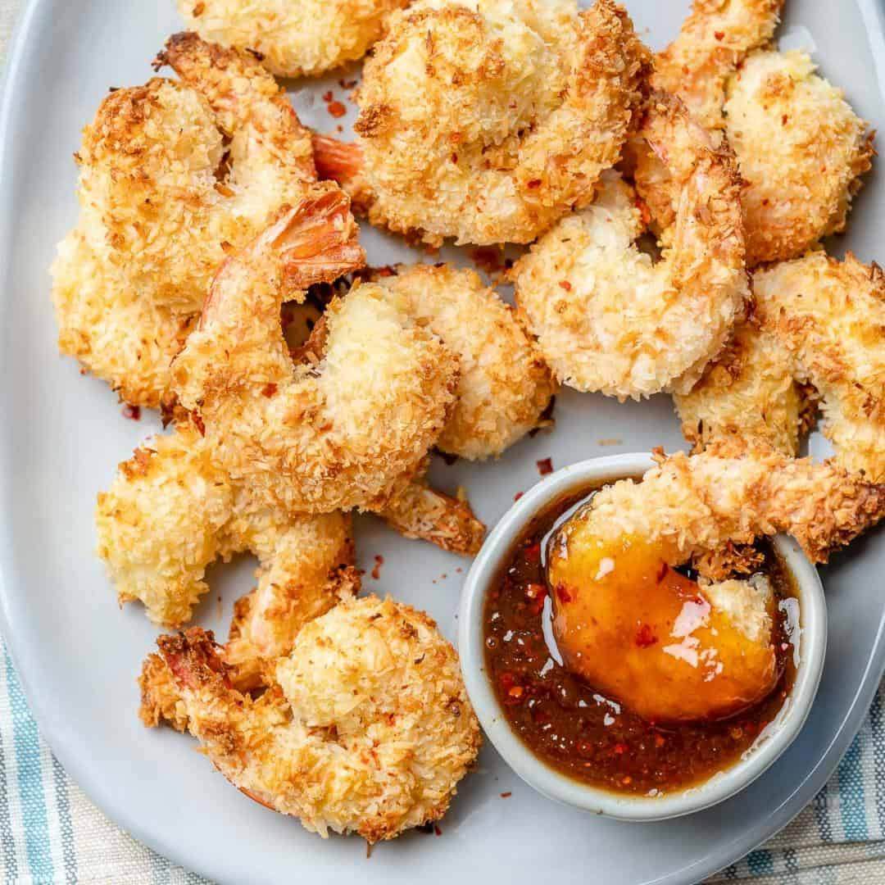

Coconut Shrimps

Description
These coconut shrimp are rolled in a coconut beer batter before frying.
Serve warm with your favorite dipping sauce — I use orange marmalade,
mustard, and horseradish mixed to taste for a dipping sauce.
Ingredients
- All purpose flour
- Egg
- Beer
- Baking Powder
- Shrimps
- Unsweetened Coconut Flakes
- Vegetable Oil
Steps
-
Whisk some of the flour, the egg, beer, and baking powder together.
-
Dredge the shrimp in flour, dip it in the beer batter, and roll in the
coconut flakes.
-
Refrigerate the shrimp for half an hour, then fry the shrimp in hot oil
until golden brown.